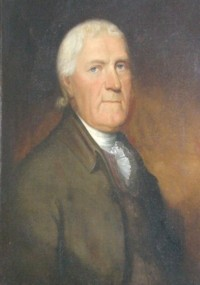

by
Stefan Bielinski
Henry I. Bogert was born in October 1729. He was the oldest surviving son of Albany residents Isaac and Hendrickie Oothout Bogert. He grew up in a carpenter's home in the third ward.
In February 1758, he married Albany native Barbara Marselis. That union produced five or more children who also were baptized in the Dutch church where he was a member and later an officer.
Henry Bogert derived his income from several sources. From his home near the waterfront, he may have practiced the carpenter's trade. At the same time, he skippered a sloop that was called the Magdeline in 1776. By that time, he was drawing maps for the city of Albany and other clients.
This Henry Bogert also found time to perform other civic duties. After serving as a constable, in 1761 he was first elected assistant alderman for the first ward. Four months after being sworn in as Albany's first official surveyor in 1766, he was elected alderman - serving in that post for several years.
He signed the Sons of Liberty Constitution in 1766. In 1775, he was elected to represent the first ward on the Albany Committee of Correspondence and served on that board throughout its lifetime. In 1776, he signed the "General Association." This Patriot stalwart carried personnel, prisoners, and supplies on his sloop - turning over operation of the Magdeline to his teen-aged son at the end of 1776. He also served the Continental army as Assistant Deputy Quartermaster General procuring and shipping needed materials in all directions. After the war, he received a land bounty right.
After the war, he resumed his duties as city surveyor - teaching his sons well enough to succeed him in the near future. Henry was given a supervisory role in the weighing and docking of vessels at Albany, and served on a number of commissions as well. His comfortable home in the heart of the city was an Albany landmark. Later, he moved north to what became 181 North Market Street.
Barbara Marselis Bogert passed on at the end of 1816 thus ending a marriage of fifty-eight years. By that time Henry I. Bogert was living with the family of his son Gerrit at 124 Hudson Street. He died in June 1821 in his ninety-second year. Letters of Administration were issued on his estate in September. He was buried in the Washington Park Cemetery. In 1867, he was re-interred at Albany Rural Cemetery.
notes
 Sources: The life of Henry I. Bogert
is CAP biography number 6097. He was known
as Henry I. (sometimes written to appear to be Henry J.) and Henry Bogert,
Jr. This profile is derived chiefly from family
and community-based resources. Incredibly,
he is the subject of a derivative Wikipedia
biography.
Sources: The life of Henry I. Bogert
is CAP biography number 6097. He was known
as Henry I. (sometimes written to appear to be Henry J.) and Henry Bogert,
Jr. This profile is derived chiefly from family
and community-based resources. Incredibly,
he is the subject of a derivative Wikipedia
biography.
A portrait attributed to Ezra Ames and painted about 1805 is in a private collection. See Ezra Ames, p. 209.
A collection of his papers - mostly detailing business transactions can be found online from the New Jersey Historical Society!
.Children of Henry J./I. Bogert from PFS: Bogaart, Hendrick J., m. 1st Engeltie Van Schaick, June 29, 1751. Henry I. Bogart died June (Jan.) 27, 1821. Ch: Dorothea, bp. May 3, 1752; Jannetie, bp. July 4, 1755. Henry I. Bogaart, md. 2; Barber Marcelis (1759 ?), Barbara Bogart, d. Oct. 23, 1816, ae. 88 yrs 1 mo. Ch: Hendrikie, b. Feb. 29, 1760; Johannes, b. Sept. 5, 1761; Johanna, b. Nov. 18, 1763; Isaac, b. Sept. 7, 1765; Gerrit, b. March 9, 1777.
first posted: 10/30/03; last revised 10/20/10